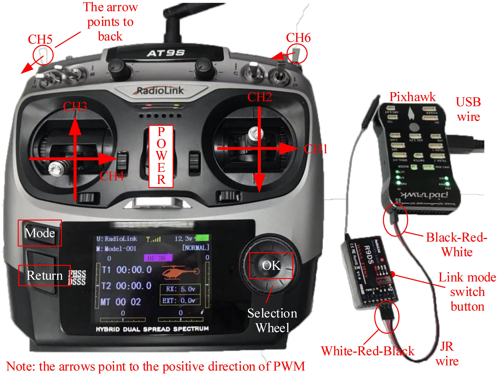
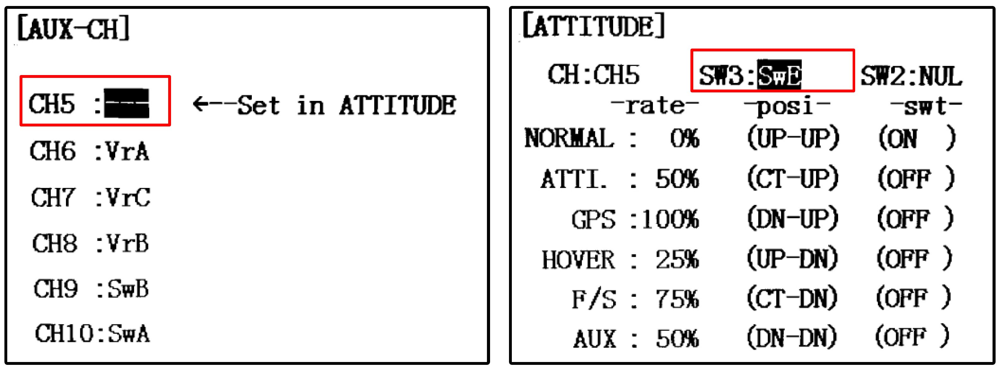

3. Hardware Platform Configuration¶
This chapter will introduce the RC system configuration, Pixhawk autopilot system configuration, airframe, and propulsion system configuration.
3.1. RC System Configuration¶
There are two RC system products presented in this book, which are RadioLink AT9S and Futaba T14SG. The receivers of these RC systems have the S.BUS output function that can transmit the PWM signals of all channels to the flight control through one data line. Radio Link AT9S is relatively inexpensive, and it is suitable for indoor experiments; Futaba T14SG is relatively expensive, but it offers better performance and reliability, which makes it more suitable for actual outdoor flight tests. RC transmitters with “Left-hand throttle (Mode 2)” configuration are selected in this book, whose left stick is the throttle lever without the auto-return function. RC transmitters with “Right-hand throttle (Mode 1)” and “Left-hand throttle” configurations have different hardware structures that cannot be modified through the software setting page; thus, readers need to pay attention to this. The following subsections detail the configuration steps of the two RC systems. Other RC systems can be configured in a similar way.
3.1.1. RadioLink AT9S Configuration Method¶
RadioLink AT9S includes an RC transmitter and an R9DS RC receiver. Other necessary accessories include a battery (LiPo lithium polymer battery, 3S, 11.1V), a battery charger, a JR line (or DuPont line) for connecting the RC receiver to the Pixhawk autopilot, and a MicroUSB cable for connecting the Pixhawk autopilot with the computer.
(1). Battery and charger instructions
The left side of Fig. 2.14 shows the battery and the charger. The battery begins to charge when the four-port charging head of the battery is inserted into the socket on the charger. Red and green indicator colors represent the “charging” and “fully charged” status, respectively. The RC transmitter battery is installed

Fig. 2.14 RC transmitter, battery, and charger
(2). RC receiver initial setting
1). Connect the RC receiver and the Pixhawk according to Fig. 2.15. The horizontal pin on the downside of the tail face of the receiver must be connected to the left-most RC pin on the tail face of the Pixhawk with a three-line JR line, and the Pixhawk MicroUSB port must be connected to the computer USB Type-A interface to supply power to the receiver and the Pixhawk.
Fig. 2.15 RC transmitter and receiver configuration
2). How to rematch the RC transmitter with an RC receiver (the connection has been completed by default, and this step needs to be performed only when problems occur in the connection of the receiver and the transmitter). Turn on the power of the RC transmitter (all other RC transmitters should be turned off), and correctly connect the receiver with the Pixhawk and the computer. Then, press the matching switch on the right side of the receiver with a pen tip or needle (see Fig. 2.15) for more than one second. At this time, the LED of the receiver starts to flash, which indicates that it is searching for the nearest RC transmitter. When the receiver LED flashes seven or eight times and then remains constant, it means that the matching process is finished and a connection has been successfully established between the RC transmitter and receiver.
3). S.BUS signal mode selection (the receiver is in this mode by default; thus, this step is typically not performed). The S.BUS mode allows the Pixhawk to transmit all channel PWM signals through one JR line. If the Pixhawk is powered up and connected to the receiver, the LED on the receiver is blue-white, which indicates that it is already in S.BUS mode and no setup is required. If the receiver LED is red, readers need to double-press (press twice within one second) the matching switch on the right side of the receiver. If the receiver LED turns blue-white, then the S.BUS mode has been successfully set.
(3). RC transmitter setting
1). Pull up the “POWER” switch shown in Fig. 2.15 to open the RC transmitter.
2). Setting the Language and Turning off the Sound
- Press the “Mode” button on the RC transmitter shown in Fig. 2.15 for several seconds to enter the model setting page shown in Fig. 2.16. Roll the “Selection Wheel” on the RC transmitter shown in Fig. 2.15, move the cursor to “PARAMETER”, and press the “OK” button on the RC transmitter shown in Fig. 2.15 to enter the RC transmitter parameter setting page.
- Scroll the “Selection Wheel” to select the “English” item, click the “OK” button, and then scroll the “Direction Wheel” again to select the desired display language. Then click the “OK” button to confirm the selection.
- Because this experiment is mainly performed indoor, it is recommended to turn off the speakers of the RC transmitter to prevent disturbing people nearby. As shown in Fig. 2.16, modify the “Sound” option from “ON” to “OFF”.

Fig. 2.16 RC transmitter parameter setting page
3). Multicopter mode setting
- Press the “Mode” button for several seconds to enter the “BASIC MENU” page, and click the “MODEL TYPE” item to enter the model type selection page shown in Fig. 2.17.
- Change the “TYPE” item from “HELICOPTER” to “MULTICOPTER”, and then press the “OK” button for several seconds to set the control mode to “Multicopter”.
Fig. 2.17 Multicopter control mode switching of RC transmitter
4). Throttle channel reverse setting
- The throttle channel of the RadioLink transmitter is opposite to normal RC transmitters, and the throttle channel reverse needs to be set. Press the “Mode” button for several seconds to enter the “REVERSE” setting page shown in Fig. 2.18, and change the throttle channel from “NOR” to “REV”.
5). CH5-CH6 mode switching channel setting
- Because of experimental requirements, CH5 shown in Fig. 2.15 of the RC transmitter needs to be mapped to a three-position switch for mode switching of the Pixhawk. Press the “Mode” button for several seconds, and click the “AUX-CH” item next to the “REVERSE” item shown in Fig. 2.18.
- As shown in Fig. 2.19, on the “AUX-CH” setting page, click the “CH5” item to enter the channel setting page, and map CH5 to a three-position switch “SwE” on the RC transmitter (switch “E” is located in the top-left corner of the RC transmitter in Fig. 2.15).
- Similarly, the “CH6” item in Fig. 2.19 must be modified to a three-position switch “SwG” of the RC transmitter (switch “G” is located in the upperright corner of the RC transmitter in Fig. 2.15).
Fig. 2.18 Throttle channel reverse setting
Fig. 2.19 CH5-CH6 mode switching channel setting
6). Channel confirmation
Restart the RC transmitter, and press the “Return” button (see Fig. 2.15) on the RC transmitter to enter the “SERVO” page (see Fig. 2.20). In this page, the PWM value of each channel can be verified by moving sticks and switches on the RC transmitter. Note that, as shown in Fig. 2.20, the channel value reaches an upper limit of 100 corresponding to the desired PWM value of 1100 µs; the channel value reaches the lower limit 100, corresponding to the desired output PWM value of 1900 µs. Note that the actual PWM value range received by the RC receiver may not equal to 1100–1900 due to various errors. So RC calibration is important for autopilots to correctly recognize the control commands from the ground pilot. For example, in Fig. 2.20, the third channel is located at an upper limit of 100, which indicates that the PWM value is about 1100 µs; the other three channels are located at 0 positions, which indicates that the corresponding PWM value is about 1500 µs.
It is important to understand the correct relationship between the stick position and the PWM value of each channel. Move each channel stick in Fig. 2.15 to confirm that each channel corresponds correctly to the following rules.
- CH1: this corresponds to the horizontal movement of the right-hand stick of the RC transmitter. The right-hand stick moves from left to right, corresponding to a PWM value that changes from 1100 to 1900.
- CH2: this corresponds to the vertical movement of the right-hand stick of the RC transmitter. The right-hand stick moves from top to bottom, corresponding to a PWM value that changes from 1100 to 1900.
- CH3: this corresponds to the vertical movement of the left-hand stick of the RC transmitter. The left-hand stick moves from top to bottom, corresponding to a PWM value that changes from 1900 to 1100 (opposite to CH2).
- CH4: this corresponds to the horizontal movement of the left-hand stick of the RC transmitter. The left-hand stick moves from left to right, corresponding to a PWM value that changes from 1100 to 1900.
- CH5: this corresponds to the three-position switch on the upper-left side of the RC transmitter. The switch moves from the top position (the farthest position from the user), middle position, and bottom position (the closest position from the user), corresponding to PWM values of 1100, 1500, and 1900, respectively.
- CH6: this corresponds to the three-position switch on the upper-right side of the RC transmitter. The switch moves to the top position (the farthest position from the user), middle position, and bottom position (the closest position from the user), corresponding PWM values of 1100, 1500, and 1900, respectively.
Fig. 2.20 RC transmitter stick position and direction
3.1.2. Configuration for Futaba T14SG¶
The connection between the Futaba receiver and the Pixhawk autopilot is slightly different from that of the RadioLink receiver. The specific connection is shown in Fig. 2.21. In the following paragraphs, the setup process for the Futaba RC transmitter is introduced.
Fig. 2.21 Pixhawk and Futaba receiver connection diagram
As shown in Fig. 2.22, the Futaba T14SG RC transmitter needs to use six channels: the J1 stick (CH1, roll channel), J2 stick (CH2, pitch channel), J3 stick (CH3, throttle channel), J4 stick (CH4, yaw channel), SE three-position switch (upper-left switch, CH5 mode channel), and SG three-position switch (upper-right switch, CH6 mode channel). The basic process of setting the Futaba T14SG RC transmitter is summarized as follows.
Fig. 2.22 Futaba T14SG RC transmitter
(1). Double-click the “LINK” button on the RC transmitter in Fig. 2.22 to enter the “LINKAGE MENU” link setting page. As shown in Fig. 2.23a, enter the “MODEL TYPE” page and change the “TYPE” to “MULTICOPTER”;
(2). Go back to the “LINKAGE MENU” page, and enter the “FUNCTION” page to confirm the channel mapping is the same as that shown in Fig. 2.23b, wherein the first to fourth channels of the RC transmitter correspond to the J1–J4 sticks;
(3). Go back to the “LINKAGE MENU” page, and enter the “REVERSE” page to confirm that the reverse direction of the channel is as shown in Fig. 2.23c, i.e., only the third channel (throttle) is reversed;
(4). Go back to the “LINKAGE MENU” page, and enter the “FUNCTION”, and scroll to the second page for the setting of CH5 to CH8. As shown in Fig. 2.23d, set the “CTRL” option of the “5 MODE” channel to “SE” stick (the upper-left stick of the RC transmitter).
(5). As in the previous step, set the “6 AUX1” channel shown in Fig. 2.23d to the “SG” stick (the upper-right stick of the RC transmitter).
After the above settings, similar to the RadioLink AT9S in Fig. 2.20, it is also necessary to verify that the PWM output of each stick follows the correct definition required by this book.
Fig. 2.23 Futaba T14SG RC transmitter
3.2. Pixhawk Autopilot System Configuration¶
Several basic firmware uploading and configuration operations are required for the brand-new Pixhawk to ensure that the Pixhawk autopilot meets the experimental requirements and ensure that the operation and configuration of Pixhawk are correct. The configuration method is summarized below.
(1). Open the QGC software.
(2). As shown in Fig. 2.24a, click the “gear” icon to enter the setting page; then, click the “Firmware” button to enter the firmware burning page.
(3). Connect the Pixhawk autopilot and the computer using a USB cable. At this time, the software will automatically recognize the Pixhawk hardware. As shown in Fig. 2.24b, a firmware configuration window will pop up on the right side of the UI. Select the “PX4 Flight Stack” item, and click “OK”; then, QGC begins to automatically download (see Fig. 2.24 if the computer is not connected to the Internet) and burn the latest PX4 firmware into the Pixhawk autopilot hardware.
Fig. 2.24 Pixhawk autopilot configuration on QGC
(4). After the firmware is burned, the Pixhawk will automatically restart and reconnect to the QGC software. Then, as shown in Fig. 2.25, enter the “Airframe” tab, select “HIL Quadcopter X” airframe type , and click the “Apply and Restart” button. Then the autopilot will automatically restart to finish the configuration for HIL simulation.
Fig. 2.25 Selecting “HIL Quadcopter X” airframe type
(5). After rebooting, QGC will automatically reconnect to Pixhawk. Check each configuration page to ensure that the Pixhawk autopilot has been in the HIL simulation mode and that no warnings appear.
3.3. Airframe and Propulsion System Configuration¶
The parameters of the multicopter simulation model in both SIL and HIL simulations are from a quadcopter with a diagonal size (opposite motor axis distance) of 450 mm and a weight of 1.4 kg. For the subsequent flight experiments, it is necessary to ensure that the configuration of the multicopter is as close as possible to the simulation model. The experiments presented in this book select the most popular F450 multicopter (see Fig. 2.26) with the following configuration.
(1). Airframe : DJI Flame Wheel F450 airframe
- Airframe weight (fuselage + arm + landing gear): 282 g
- Protection airframe: weight: 4×32 g
- Diagonal size: 450 mm
- Take-off weight: within the range 800–1600 g
- Recommended propeller: 8–10inches
(2). Propulsion system : DJI E310 propulsion suite (four motors, four ESCs, and four propellers)
- Motor size: 23×12 mm, KV value: 960 RPM/V, weight: 60 g
- Propeller size: 24×12.7 cm (9.4×5.0in), weight: 13 g
- ESC size: 74×32×10 mm, maximum continuous current: 20 A, weight: 43 g
(3). Battery : GENS ACE LiPo battery
- Capacity: 4000 mAh
- Voltage: 3S (11.1 V)
- Discharge rate: 25C
- Weight: 300 g
(4). Autopilot : Pixhawk 1 (2MB flash version)
Compiling command: px4fmu-v3_default, size: 81×47×16 mm, weight: 36 g
GPS module: UBlox NEO-M8N GPS, module weight: 14 g, weight: 24 g
Other accessories: power module, buzzer, safety switch, connector, and antivibration damper weighing a total of 60 g
Fig. 2.26 F450 airframe and its components
After completing the assembly of the aerial vehicle, readers can follow the PX4 official website tutorial19 to conduct preliminary flight tests to ensure that all functions are normal.
If you have any question, please go to https://flyeval.com/course for your information.